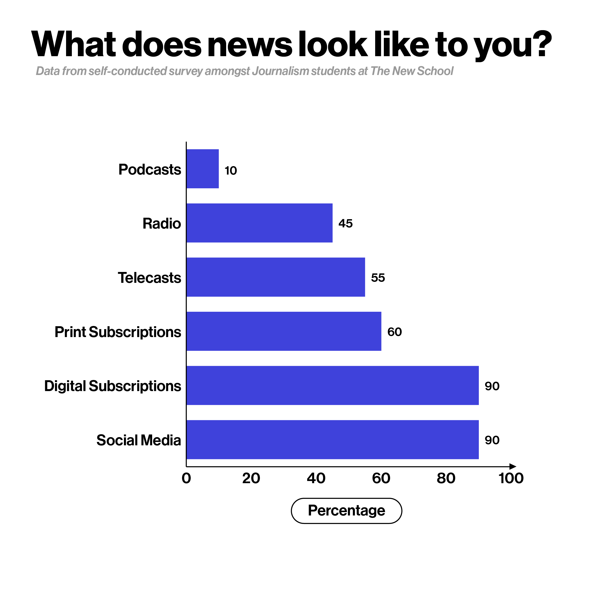
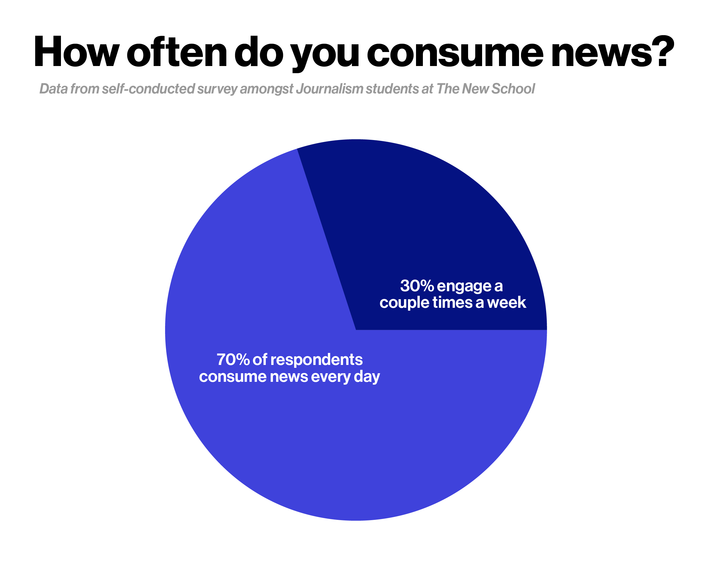
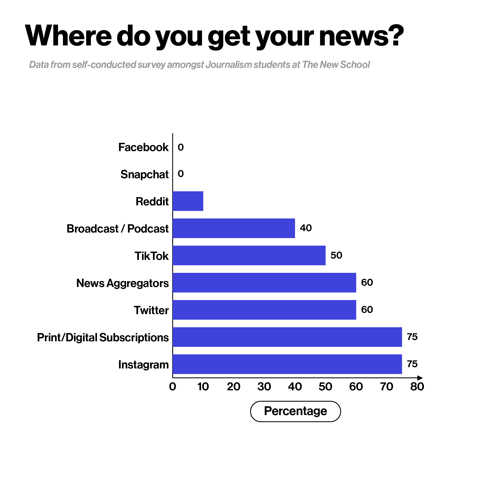

By Rthvika Suvarna, Aarya Kini, and Noor Selim.
We conducted a research study of student journalists at The New School, in an attempt to better understand their news literacy, media diet and industry ambitions. What we found, unsurprisingly, was a community of social-media dependent student journalists.
If you’ve been browsing social media lately, chances are you've come across a post informing you about the news. As social media democratizes news production and distribution for publications large, small and individuals alike, it also draws a larger crowd, particularly Gen Z into its news ecosystem.
Student journalists today are no exception to this. As social media news continues to constitute an ever-growing segment of their media diets, the reporting process for student journalists begins to be influenced by it. As Gen Z is constituted entirely of digital natives who likely don’t remember a world without the internet, it isn’t surprising that the ways in which they produce news differs greatly from the traditional reporting of the past.
While Gen Z consumes more news daily than any other generation, the means by which they do so is vastly different. Scrolling feeds and notifications are key to keeping Gen Z engaged in the news, with the data telling the same story. According to a May 2022 study by Deloitte Insights , 51% of Gen Z teens and 33% of Gen Z adults (the range that makes up the college-aged demographic) got their news from social media, making it the most popular means by which this generation keeps up to date with news and current events.
According to our research, 90% of student journalists at The New School who participated in this study resort to social media platforms for their consumption of news. The age demographic for this study ranged from 19 to 23 year olds, a dominant range for undergraduate students enrolled in college. For efficiency purposes, this form exclusively targeted undergraduate students enrolled in Journalism majors or minors at The New School.
Nearly 70% of these student journalists consume news on a daily basis, while the remaining 30% frequent the news a couple of times in a week. This showcases how student journalists are included in the Gen-Z demographic who are dependent on social media platforms to feed their news diets.
Amongst platforms like TikTok, Twitter, and Reddit, to name a few, a majority of the respondents cited Instagram as their primary source for news. Facebook and Snapchat were the least popular social platforms for news consumption, with zero respondents citing them as a news source. Over half of the respondents get their news from aggregator services such as Apple News or Google News and additionally 75% of respondents have print/digital subscriptions to publications such as The New York Times, The Washington Post, New York Magazine, The New Yorker and The Guardian.
Although social media platforms are a favored news source for student journalists at The New School, none of the respondents aim to pursue any form of social media journalism as a career. When asked what form of journalism they’re most interested in, 75% expressed their interest in writing for Print/Digital publications, 20% intend to pursue Video/Documentary journalism and 5% aimed to work for Podcasting publications.
While social media journalism as a career is not a proven interest amongst student journalists at The New School, the use of social media platforms as a means of sourcing information remains prevalent, but at what cost?
An article published by The Guardian titled "What Happens If Teens Get Their News From TikTok," states that TikTok, Youtube, Facebook and Twitter platforms collectively “supply 66% of young people [as] their main news source, and all rely on algorithms.” By showing viewers what they want to see, we risk increasing “polarized views in society, as people are exposed to a less diverse diet of actual current affairs.” These limitations are placed on any consumer, irrespective of their professions but for a journalist, user-specific algorithms generated by platforms like TikTok or Twitter may risk one’s pursuit of the truth.
A primary lesson for any reporter begins with source diversity. Ten quotes from the same person will only tell one story, so we are taught early on to broaden our horizons for the sake of the people and for the sake of their stories. A similar concept of diversity can be said for us as readers and writers of the news – if an individual’s news diet lacks range, then an individual’s ability to look beyond their own perspective is weakened. Contributing writer, Nicholas Carr of Politico, dissects how our digital track history confines us to sorting algorithms by companies like Meta and Twitter, where “our past choices also become the template for the information we receive in the future.” As individuals we continue to coexist in this digital confinement where “each of us gets locked into our own self-defining feedback loop.” It’s a world where “bias gets amplified, context gets lost.”
In our research process we noted that most respondents are subscribed to The New York Times, The Washington Post, The Guardian and New York Magazine. Whether these respondents consume news on The New York Times website via a print subscription or if they simply engage with @nytimes on Instagram, the perspectives that students are encountering are the same, the only difference being perhaps differing levels of depth.
Similar to a number of universities in the United States, The New School sponsors subscriptions to a few outlets for its student body, namely The New York Times and The New Yorker’s archive section in entirety. Student journalists at The New School are a part of an institution where mainstream media coverage is encouraged and even subsidized. It is in the hands of individual professors to encourage students to diversify their own media diet, either by themselves going beyond the syllabus and mandating that students read a range of writing, or pushing their students to engage more deeply with local news outside the classroom. Consequently, the exposure that a student has to journalism that doesn’t perpetually align with their perspectives is thoroughly dependent on the individual, as our academic system relies on a unified set of resources.
As student journalists at The New School the onus is on us and the designers of our curricula to ensure that we immerse ourselves in a range of journalistic forms beyond those delivered to us by the algorithms. As models of trust on social media shift towards those that tend towards the individualistic and personal, the considerations of community and the public sphere can get lost. Carr writes that “our choices about what we watch, read and listen to, on display through our online profiles and posts, become statements about ourselves and our beliefs, signifiers of our tribal allegiance.” It is evident that our behavior online manifests in what we choose to write, and ultimately represent, as journalists. So if the institution that is training student journalists to be the future of the industry’s workforce, does little to encourage or even inform them of the risks that come with an unbalanced news diet, how are they to comprehend the loss of perspective that’s at stake?